Introduction
Projects are the top-level structure for organizing data in GeoDatalytics. In order to start exploring data, you need to select a project. The project management interface allows you to create and configure projects. Project configuration involves dataset selection and access control. This guide will explain the features available in the project management interface so that you can get started with your own project in GeoDatalytics.
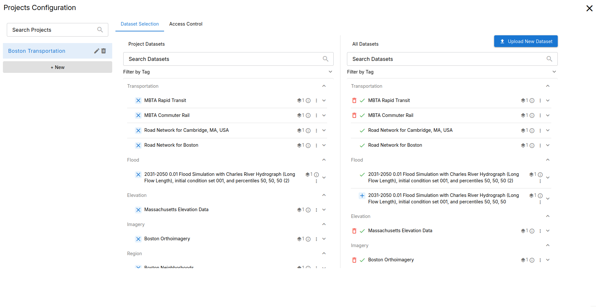
Basic Project Controls
When you first access GeoDatalytics, no project has been selected yet, so the map shows the whole world and the panels in the sidebars are empty. At the top of the left sidebar, just below the app title, there is a set of project controls.
Note
If you are not logged in, you will not have access to the project management interface, so some of the controls shown in these screenshots will not be available to you.
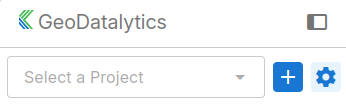
The project selection dropdown controls the current project. If you already have access to one or more projects, the options in this dropdown will be populated with those project names. Selecting a project from the list will activate that project; the panels in the sidebars will be populated with objects in that project, and the map will zoom to the project’s default map position.
If you do not have access to any projects yet, the project selection dropdown will display “No available projects.” You will need to create a new project in order to start exploring data on the map. To help new users, an informational tooltip is displayed when no projects are available in the project selection dropdown.
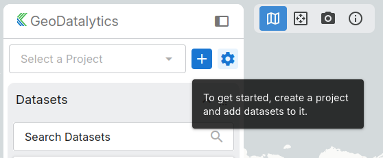
To the right of the project selection, there are two icon buttons. The first button has a plus icon; when clicked, this button opens the project management interface and focuses the portion for creating a new project. The second button has a gear icon; when clicked, this button opens the same project management interface for general project configuration.
If a current project is selected, an additional row will appear below the basic project controls. Two text buttons offer controls related to the project’s default map position. The first control, when clicked, will zoom and pan the map view to the default map position. The second control, when clicked, will set the project’s default map position to match the current map view. The latter control will only appear if you have write permission on the project.
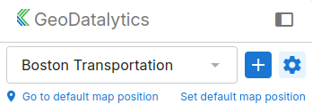
Project Management Interface Structure
The project management interface has a list of all projects (that you have access to) along the left side. Once you select a project to configure from that list, then the main content of this interface is shown. The main content is organized into two tabs: Dataset Selection and Access Control. The following sections will explain each of these areas in detail.
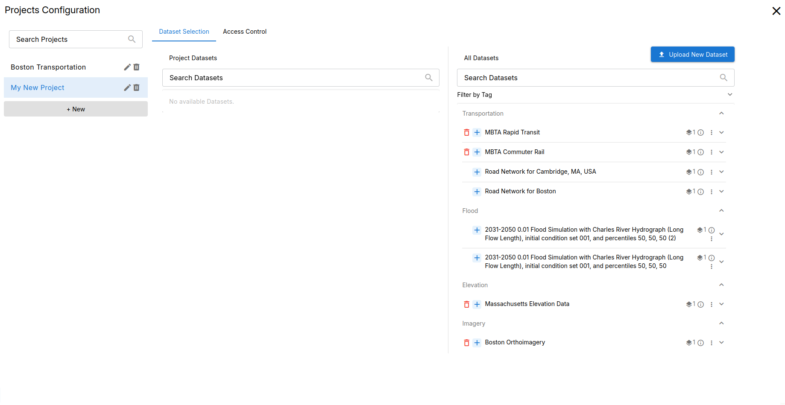
Project List
The left side of the project configuration interface displays a list of all projects to which you have at least read access. If you have many projects, there is a search bar at the top of the list to filter the projects by name. Each project in the list can be clicked to select that project for configuration. In the screenshot below, the project called “My New Project” has been selected and is shown with a highlight.
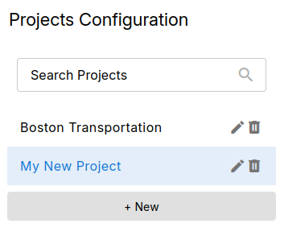
For each project in the list for which you are the owner, two icons are shown to the right of the project name. The pencil icon, when clicked, allows you to edit the name of the project. The trash icon, when clicked, will open a dialog asking you to confirm whether you want to delete the project. If you confirm, the project will be deleted.
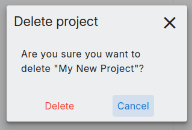
At the end of the list of available projects, there is a “+ New” button. When clicked, the button will be replaced with an input to specify a name for the new project. If you had opened the project management interface by clicking on the plus button instead of the gear button (see Basic Project Controls), this input would already be visible and focused. Once you input a valid and unique project name, clicking the blue arrow button next to the input or pressing the “Enter” key will create the new project with you as the owner. That new project will automatically be selected for configuration, and the main content of the interface will show the Dataset Selection tab.
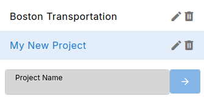
Dataset Selection
The Dataset Selection tab in the project management interface shows two columns: Project Datasets and All Datasets. This tab allows you to explore all the datasets available in the GeoDatalytics database and select relevant datasets for your project.
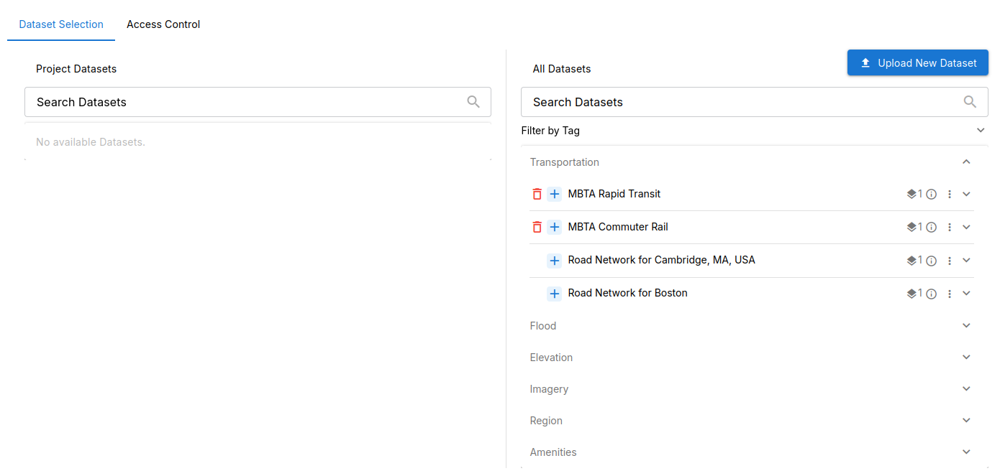
After a new project has been created, it doesn’t have any datasets in it yet, so the left dataset list will be empty, as shown in the screenshot above. The screenshot below shows a project that has already been configured to include several datasets.
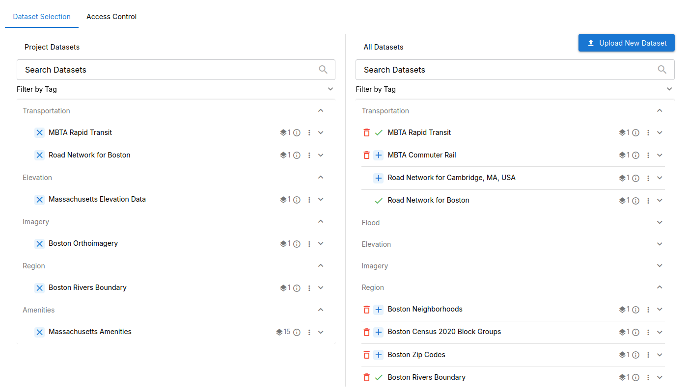
Both columns show a list of datasets. Each dataset list has the same structure as the list in the Datasets panel. See the Datasets Panel documentation for a description of the basic dataset list controls. In addition to those basic controls, these dataset lists have a few more features.
Any datasets that appear in the “Project Datasets” list on the left will show a blue “X” button to the left of the dataset name; clicking this button will remove the dataset from the project (and therefore remove it from that list).
Any datasets that appear in the “All Datasets” list on the right will show at least one icon to the left of the dataset name, depending on the ownership of the dataset and whether it is included in the current project.
Any datasets that you own will show a red trash icon which, when clicked, will show a dialog asking to confirm whether you want to delete the dataset. That dialog will also tell you which projects are currently using that dataset. If you confirm the deletion of that dataset, it will be removed from all of those projects and completely removed from the database.
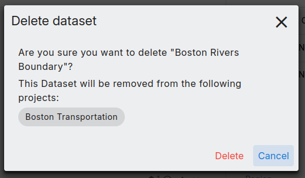
Every dataset that appears in the “All Datasets” list will show either a green checkmark icon if it has already been added to the current project or a blue plus button if not. Clicking on the blue plus button will add that dataset to the current project, and it will appear in the “Project Datasets” list.
If you cannot find a dataset you need among the “All Datasets” list, there is also a blue “Upload New Dataset” button at the top of that list. If you do decide to upload your own dataset to GeoDatalytics, please use caution; all datasets are public and can be used by anyone. Visit the Dataset Upload documentation to learn more.
Once you have added one or more datasets to your project, you are ready to start exploring and visualizing in the main interface. Or, if you would like to collaborate with other users on your project, you can complete the optional access control step.
Access Control
By default, a project can only be seen by its owner (and any site administrators). The access control tab in the project management interface allows you to grant permissions to other users. There are three tiers of access: owner, collaborator, and follower. For more details on which privileges are granted to each tier, see the Permissions Table at the end of this section.
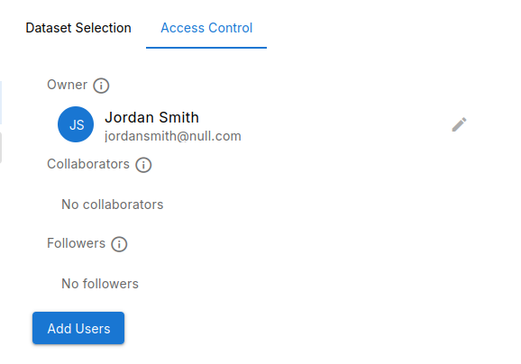
There can only be one owner of the project, typically the person who created it. The owner has read-write access and is the only one (besides site administrators) who can delete the project and assign access control.
If you are the owner of a project, you will see a blue “Add Users” button at the bottom of the access control list. Clicking on this button will open a dialog to select users and specify the permission level for that set of users.
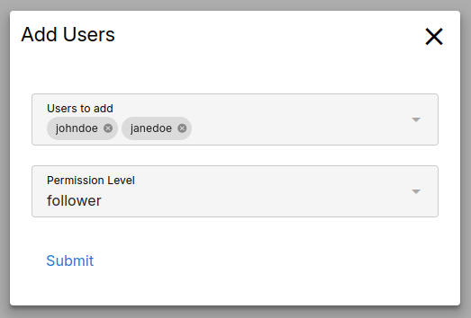
You cannot add followers and collaborators at the same time; you must open the dialog again and specify a separate set of users at the other permission level. This constraint is in place to help users avoid accidental permission grants. If you add a user that already exists at another permission level, that user will simply be moved to the new permission level you specify.
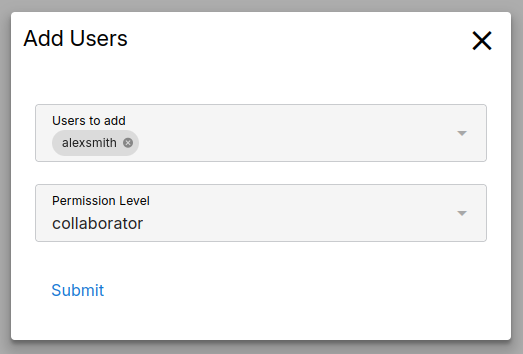
After submitting the permission assignments, the access control tab will show the users at each permission level.
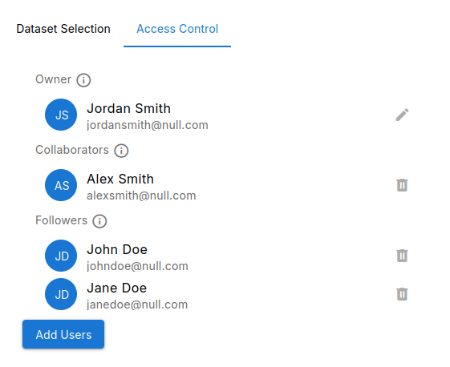
If you are the owner, you will also see trash icons to the right of each user which, when clicked, will show a dialog asking to confirm whether you want to remove that user from the project. If you confirm, that user will no longer have any access to the project, and it will not show up in the project list for them anymore.
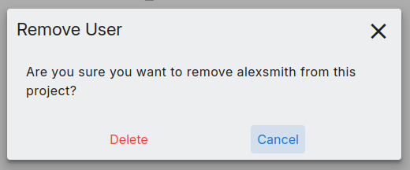
In rare cases, a project owner may wish to transfer ownership of the project to another user. The pencil icon to the right of the owner section allows the current owner to specify a new owner. Use caution when transferring ownership; you cannot undo this action. Only the new owner (or a site administrator) would be able to transfer ownership back to you. Once you transfer ownership, you will be demoted to collaborator on the project.
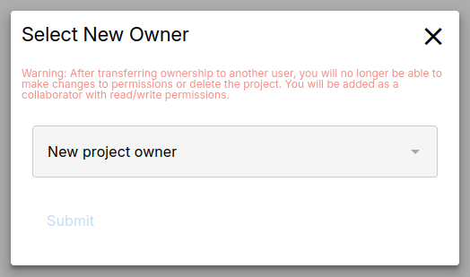
Permissions Table
| Action | Follower | Collaborator | Owner |
|---|---|---|---|
| View project configuration, including current dataset selection and access control | X | X | X |
| Explore datasets in the project, visualize their layers on the map, and temporarily customize layer styles | X | X | X |
| Create, update, and delete saved layer styles | X | X | |
| Create, update, and delete custom colormaps that can be used in layer styles within the project | X | X | |
| Load saved views belonging to the project | X | X | X |
| Create and delete saved views belonging to the project | X | X | |
| View charts in the project | X | X | X |
| View networks in the project and make ephemeral state changes such as node deactivation | X | X | X |
| View previous Analytics task runs belonging to the project and visualize the results on the map | X | X | X |
| Create new Analytics task runs belonging to the project | X | X | |
| Add datasets to the project or remove them | X | X | |
| Change project name | X | X | |
| Modify project access control | X | ||
| Delete project | X | ||
| Transfer ownership | X |